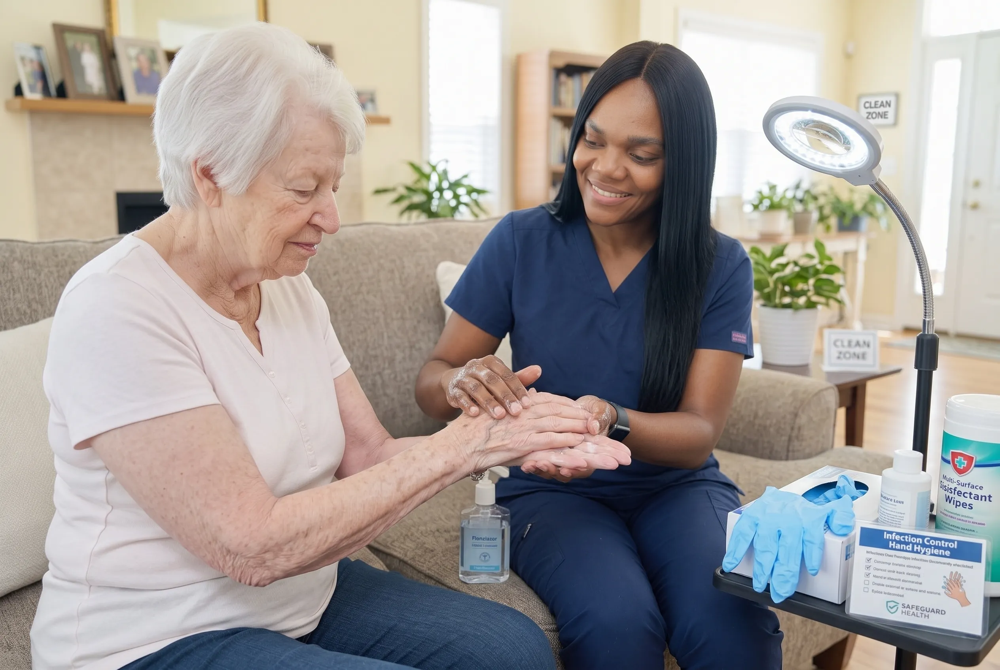

The Recovery Is the Other Half of the Operation
Surgery is planned in detail. Recovery, more often than not, is left to a printed sheet and hope. Yet for an older adult the weeks after an operation carry real risk: infection at the incision, deconditioning from days of bed rest, poorly controlled pain, and the constipation, confusion or dizziness that anaesthetic and new medications can bring.
Post-operative nursing puts a trained set of eyes on that period. The incision gets looked at by someone who knows what early infection looks like. Pain is assessed rather than guessed at. Getting moving again happens on a schedule, safely, instead of being avoided out of fear of falling.
We work alongside the surgical team's instructions, not around them — and we tell the family plainly when something needs the surgeon's attention.
Most post-surgical setbacks are not dramatic. They are small things noticed late.

When Post-Operative Nursing Support Makes Sense
Surgical recovery at home goes well for most people. These are the factors that shift the odds.
The patient is older or frail
Age changes recovery. Healing is slower, infection risk is higher, and the effects of anaesthetic linger longer than they would in a younger patient.
There is an incision that needs managing
Any wound that requires dressing changes, or that sits somewhere awkward to see and reach without help.
Pain control is complicated
Where opioids are involved, or where existing chronic pain makes it hard to tell what is normal post-surgical discomfort and what is not.
Mobility restrictions apply
Weight-bearing limits, lifting restrictions or movement precautions that are easy to breach without realising.
The home is not set up for recovery
Stairs to the bedroom, a bathroom that cannot be used with a walker, no bed on the ground floor.
There are other conditions in play
Diabetes, heart failure, COPD or blood thinners all complicate surgical recovery and need watching alongside the wound itself.
What Post-Operative Care Actually Involves
The plan is written against the specific procedure and the surgeon's instructions. These are the areas it covers.
Surgical Site Care and Infection Surveillance
The incision is inspected on a defined schedule by someone who knows what normal healing looks like at day three, day seven and day fourteen for that type of procedure — and therefore knows when something is off.
Dressing changes are done under sterile technique with the products the surgical team specified. The site is measured and documented at each visit so that change over time is visible in a record rather than reconstructed from memory.
Surgical site infection is the complication we are most alert to, because it is common, it escalates quickly in older adults, and caught early it is usually manageable at home.
- Scheduled incision inspection and assessment
- Sterile dressing changes to the surgical protocol
- Documented measurement and healing tracking
- Redness, heat, swelling, discharge and odour monitoring
- Temperature and systemic infection sign checks
- Direct escalation to the surgical team when indicated
Pain Assessment and Medication Management
Pain after surgery is not just a comfort issue. Poorly controlled pain stops people moving, and not moving is what causes pneumonia, blood clots and the muscle loss that turns a two-week recovery into a three-month one.
Equally, over-sedation in an older adult causes confusion, constipation and falls. The job is to get this balance right, and that requires proper assessment rather than asking 'how are you feeling?' at the door.
Our nurses assess and score pain systematically, supervise the prescribed regimen, watch for side effects, and give the prescriber real information when an adjustment is needed.
- Structured pain assessment and scoring
- Supervision of the prescribed analgesic regimen
- Opioid side effect monitoring (sedation, constipation, confusion)
- Assessment of whether pain is limiting recovery activity
- Documentation to support prescriber adjustments
- Non-pharmacological comfort measures
Safe Re-Mobilization
Getting moving again is the single most important thing a post-surgical patient does, and the thing they are most likely to avoid — because it hurts, and because they are frightened of falling or damaging the repair.
Nursing support means movement happens, on a graded schedule, with somebody there. It also means the surgeon's precautions are actually observed: weight-bearing status, movement restrictions, lifting limits.
- Supervised mobility within surgical precautions
- Safe transfer technique (bed, chair, toilet, stairs)
- Fall risk assessment in the post-operative state
- Graded activity progression against recovery goals
- Reinforcement of weight-bearing and movement restrictions
- Coordination with physiotherapy where involved
Post-Anaesthetic and Systemic Effects
Anaesthetic and surgery affect far more than the operative site. Older adults commonly experience post-operative confusion, constipation, urinary retention, nausea, dizziness and disturbed sleep.
These are frequently dismissed as 'just how they are after an operation' — but post-operative delirium in particular is a genuine clinical event that needs recognising, and constipation from opioids can become an emergency if left.
- Post-operative delirium and confusion monitoring
- Bowel function tracking and constipation prevention
- Urinary output and retention observation
- Nausea and appetite management
- Blood clot warning sign awareness (DVT/PE)
- Sleep and orientation support
Nutrition, Hydration and Healing
Tissue repair requires protein, calories and fluid, and appetite after surgery is frequently poor. An older adult who eats little for a fortnight will heal slowly and lose strength they will struggle to rebuild.
We track intake honestly rather than accepting 'she's eating fine', monitor hydration, and flag when nutritional intake is genuinely inadequate for the healing that is being asked of the body.
- Food and fluid intake monitoring
- Weight tracking through the recovery period
- Dehydration sign recognition
- Support with meals where required
- Protein and nutrition guidance for healing
- Escalation where intake is clinically inadequate
Reporting Back to the Surgical Team
The surgeon sees the patient at the follow-up appointment and asks how recovery has gone. The answer is usually a family member's best recollection of a difficult few weeks.
Our documented observations replace that with something useful: what the wound has actually done, what the pain scores have been, how mobility has progressed, and what complications arose and when.
- Written recovery notes for the family
- Documented observations for the follow-up appointment
- Direct escalation when something falls outside expectations
- Coordination with the family physician
- Handover to ongoing services if recovery is prolonged
- Clear discharge when recovery is complete
The operation is a few hours. The recovery is six weeks — and it is the recovery that determines whether someone gets their independence back.
Four Things That Decide How Recovery Goes
Our post-operative care plans are organized around these, in this order.
Infection Prevention
Sterile technique at every dressing change, plus daily observation of the incision for early warning signs.
Pain Control
Pain assessed and documented properly, so medication can be adjusted on evidence rather than guesswork.
Safe Re-Mobilization
Getting moving again matters — but at the right pace, with support, and without a fall undoing everything.
Nutrition & Hydration
Healing needs fuel. Appetite after surgery is often poor, and dehydration is easy to miss.
What Post-Operative Nursing Includes
The plan is written against the specific procedure and the surgeon's discharge instructions, then adjusted as healing progresses.
What Is Included:
How Post-Operative Care Progresses
Intensity is highest at the start and reduces as healing establishes.
Pre-surgery planning
Where the operation is scheduled, we assess the home and set the recovery plan up before the admission rather than after it.
Homecoming visit
Baseline observations, review of the surgical instructions, wound inspection and a check that the house is workable.
Early recovery phase
Frequent visits covering the incision, pain, mobility and systemic effects, with documentation each time.
Progression phase
As the wound stabilises, focus shifts from complication watching to rebuilding strength and independence.
Follow-up and discharge
Observations prepared for the surgical review, then step down or close the file.
Procedures We Commonly Support Recovery From
If your procedure is not listed, ask — and if we are not the right fit for it, we will tell you.
How Post-Operative Care Is Set Up
Pre-Surgery Planning
Where surgery is scheduled in advance, we plan the recovery before the operation rather than after it.
Homecoming Assessment
A nursing visit on return home establishes the baseline and checks the home is set up for recovery.
Active Recovery Phase
Regular visits covering the incision, pain, mobility and general condition, with notes each time.
Return to Independence
As healing progresses, visits reduce and the goal shifts from recovery to getting normal life back.
Why Families Arrange Post-Operative Care With Us
We plan before the operation
Where surgery is scheduled, the recovery is arranged in advance — not improvised on discharge day.
Sterile technique, every time
Consistency of technique is what prevents surgical site infection. It is not an area where we improvise.
We follow the surgeon's plan
Our role is to carry out the surgical team's instructions properly at home and report back, not to substitute our own judgement for theirs.
We watch the whole patient
Delirium, constipation, dehydration and clots cause more post-operative readmissions than the wound does.
Home set-up advice
Practical problems — a bedroom upstairs, an unusable bathroom — are far easier to solve before the operation.
A record for the follow-up
The surgeon gets documented observations instead of a family member's best guess.
Where We Provide This Service
OnPoint Nurse & Home Care serves families across Metro Vancouver. If you are just outside these communities, call us anyway — we will tell you honestly whether we can reach you reliably.
Post-Operative Care: Common Questions
If the surgery is scheduled, yes. Planning ahead means the home is ready, the first visit is booked, and nobody is making phone calls on the day of discharge. It also lets us flag practical problems — a bedroom upstairs, a bathroom that will be difficult — while there is still time to solve them.
Commonly orthopaedic procedures such as hip and knee replacements, abdominal surgery, cardiac procedures and cancer surgery. The care plan is built around the specific procedure and the surgeon's instructions. If we do not think we are the right fit for a particular case, we will say so.
Yes. The surgical team's instructions govern the clinical plan — our role is to carry them out properly at home, document what is happening, and escalate to the surgeon or physician when something falls outside expectations.
We help coordinate and prepare for them, and our notes give the surgical team a clear picture of how recovery has actually gone between visits. Speak to our care team about what practical transport arrangements are possible in your area.
As soon as you have a date. Two weeks of notice is comfortable; a few days is workable. The earlier we know, the more we can solve in advance — the home set-up, the first visit booking, the equipment, the question of who will be there on the first night.
Where scheduling allows, yes, and it is often the most valuable visit of the whole plan. Tell us the expected discharge date as early as possible so we can hold the slot.
The nurse assesses it, documents it, and escalates according to the care plan — to the surgical team, the family physician, or emergency services if the situation warrants. You will be told what was found and what was done, at the time, not afterwards.